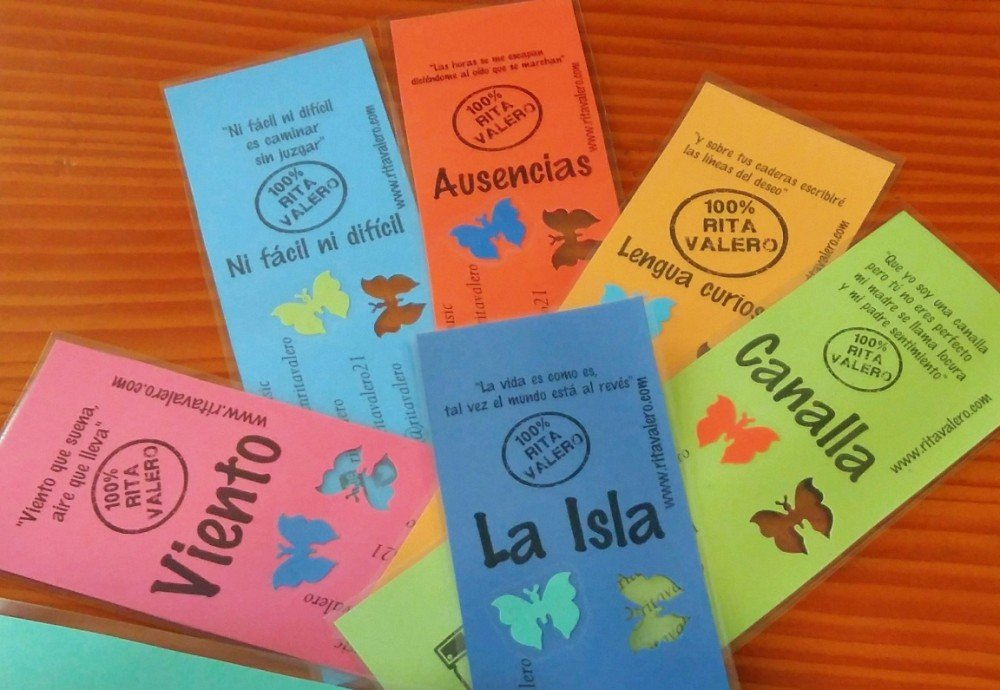

<?xml version="1.0" encoding="UTF-8"?><rss version="2.0"
	xmlns:content="http://purl.org/rss/1.0/modules/content/"
	xmlns:wfw="http://wellformedweb.org/CommentAPI/"
	xmlns:dc="http://purl.org/dc/elements/1.1/"
	xmlns:atom="http://www.w3.org/2005/Atom"
	xmlns:sy="http://purl.org/rss/1.0/modules/syndication/"
	xmlns:slash="http://purl.org/rss/1.0/modules/slash/"
	>

<channel>
	<title>Disco 100% | Rita Valero</title>
	<atom:link href="./index.html" rel="self" type="application/rss+xml" />
	<link>../../../index.html</link>
	<description>Voz y palabras</description>
	<lastBuildDate>Mon, 24 Nov 2025 17:14:58 +0000</lastBuildDate>
	<language>ca</language>
	<sy:updatePeriod>
	hourly	</sy:updatePeriod>
	<sy:updateFrequency>
	1	</sy:updateFrequency>
	<generator>https://wordpress.org/?v=7.1.3</generator>

<image>
	<url>../../../wp-content/uploads/2021/08/cropped-favicon-rita-valero-32x32.jpg</url>
	<title>Disco 100% | Rita Valero</title>
	<link>../../../index.html</link>
	<width>32</width>
	<height>32</height>
</image> 
	<item>
		<title>100%</title>
		<link>../../../project/100/index.html</link>
					<comments>../../../project/100/index.html#respond</comments>
		
		<dc:creator><![CDATA[graficart]]></dc:creator>
		<pubDate>Fri, 28 Jan 2022 07:38:55 +0000</pubDate>
				<guid isPermaLink="false">http://novaweb.ritavalero.com/?post_type=project&#038;p=267</guid>

					<description><![CDATA[100% es un disco de temas propios, compuestos y escritos por Rita Valero. Unos temas llenos de vivencias, alegres y positivas, otras más íntimas e introspectivas. Es un disco donde la artista se muestra tal y como es, auténtica 100% en todas las facetas de su vida: a veces despeinada (Vivir Despeiná), otras más traviesa (Cerrando [&#8230;]]]></description>
										<content:encoded><![CDATA[<p><strong><em>100%</em></strong> es un disco de temas propios, compuestos y escritos por Rita Valero. Unos temas llenos de vivencias, alegres y positivas, otras más íntimas e introspectivas.</p>
<p>Es un disco donde la artista se muestra tal y como es, auténtica 100% en todas las facetas de su vida: a veces despeinada (<em>Vivir Despeiná</em>), otras más traviesa (<em>Cerrando Bares</em>), y otras curiosa (<em>LenguaCuriosa</em>) o con cierta añoranza (<em>Ausencias</em>).</p>
<p>Rita Valero propone un recorrido por diferentes estilos musicales. Muestra un itinerario donde cada canción traslada a la persona que la escucha a un espacio donde reina la variedad y la creatividad, dos elementos que definen a la artista.</p>
<p>El disco fue mezclado en <strong>Soudclub Studio</strong> de la mano de <strong>Lluís Costa</strong>, y tuvo la participación en la grabación de: <strong>Ramón Castillo</strong> a la batería y a la percusión, <strong>Agustí Casademont</strong> a los teclados y al bajo, <strong>Lluís Morilla</strong> a la guitarra y <strong>Juli Canal</strong> a los vientos.</p>
<p>Son temas frescos que fusionan estilos como el swing, soul, funky, rock, bossa, rumba y blues, que con un toque personal, hacen que el disco resulte totalmente homogéneo.</p>
<p>Rita Valero es una artista comprometida, que nos muestra unas canciones intensas, llenas de matices y detalles, y con las que todo el mundo puede sentirse identificado.</p>
<p>Del tema <strong><em><a href="https://youtu.be/E0kHQrQvCMQ" target="_blank" rel="noreferrer noopener" data-type="URL" data-id="https://youtu.be/E0kHQrQvCMQ">Ausencias</a></em></strong>, es del cual presenta su primer <strong>videoclip,</strong> una narración con imágenes que, de la mano del director <strong>Àlex Arza</strong> (<strong>Ifonkgraphics</strong>) y de los actores: <strong>Olga Cercós</strong> y <strong>David Galcerán</strong>, ilustra aquel sutil instante, lleno de recuerdos, que pasa en un abrir y cerrar de ojos.</p>
<p>El segundo single del disco es <strong><em><a href="https://youtu.be/7c6C_oU-DCM" target="_blank" rel="noreferrer noopener" data-type="URL" data-id="https://youtu.be/7c6C_oU-DCM">Canalla</a></em></strong> del cual presenta <strong>videoclip</strong>, nuevamente de la mano del director <strong>Àlex Arza</strong>, y donde se ve reflejada una pequeña muestra de los diferentes bolos de la gira de presentación del disco.</p>
<p>El tercer single es <strong><em><a href="https://youtu.be/vfQxACqgDcI" target="_blank" rel="noreferrer noopener" data-type="URL" data-id="https://youtu.be/vfQxACqgDcI">Lilith</a></em></strong>, tema que compuso la artista por petición de <strong>Espai Dona</strong>, asociación que ayuda a las mujeres en la <strong>recuperación por el maltrato y la violencia tanto física como psicológica</strong>. La canción fue estrenada el 25 de Noviembre en el marco del día de la no violencia de género hacia las mujeres. El <strong>videoclip</strong> es un compendio de <strong>ilustraciones</strong> que hizo para la ocasión el <strong>artista gráfico VVCreativo</strong>.</p>
<p>Con un <strong><a href="https://youtu.be/mtFJwQQy3aY" target="_blank" rel="noreferrer noopener" data-type="URL" data-id="https://youtu.be/mtFJwQQy3aY">directo</a> </strong>original y sorprendente, y con gran complicidad con el público, Rita Valero ofrece varios formatos:</p>
<ul>
<li><strong>Acústico</strong> con guitarra, percusión y voz</li>
<li><strong>Banda</strong> completa: batería, percusión, teclado, guitarra, bajo, vientos y voz</li>
</ul>
<p>Los temas del disco <em><strong><a href="https://youtu.be/xuWsrOHYqTs" target="_blank" rel="noreferrer noopener" data-type="URL" data-id="https://youtu.be/xuWsrOHYqTs">100%</a></strong></em></p>
<p><strong>1. </strong><strong><em>Ausencias</em></strong></p>
<p><strong>2. </strong><strong><em>Hermosa y venenosa</em></strong></p>
<p><strong>3. </strong><strong><em>Ni fácil ni difícil</em></strong></p>
<p><strong>4. </strong><strong><em>Lengua curiosa</em></strong></p>
<p><strong>5. </strong><strong><em>Lilith</em></strong></p>
<p><strong>6. </strong><strong><em>Viento</em></strong></p>
<p><strong>7. </strong><strong><em>Se acabó</em></strong></p>
<div class="wp-block-image">
<figure class="alignright size-large is-resized"></figure>
</div>
<p><strong>8. </strong><strong><em>La Isla</em></strong></p>
<p><strong>9. </strong><strong><em>Canalla</em></strong></p>
<p><strong>10. </strong><strong><em>Palafrugell</em></strong></p>
<p><strong>11. </strong><strong><em>Peligro</em></strong></p>
<p><strong>12. </strong><strong><em>Vivir despeiná</em></strong></p>
<p><strong>13. </strong><strong><em>Tancant bars</em></strong></p>
<p><strong>14. </strong><strong><em>Ser</em></strong></p>
<p><strong>15. </strong><strong><em>Lilith (cat.)</em></strong></p>
]]></content:encoded>
					
					<wfw:commentRss>../../../project/100/feed/index.html</wfw:commentRss>
			<slash:comments>0</slash:comments>
		
		
			</item>
		<item>
		<title>Por la igualdad: Lilith</title>
		<link>../../../project/por-la-igualdad-lilith/index.html</link>
					<comments>../../../project/por-la-igualdad-lilith/index.html#respond</comments>
		
		<dc:creator><![CDATA[graficart]]></dc:creator>
		<pubDate>Tue, 25 Jan 2022 19:34:12 +0000</pubDate>
				<guid isPermaLink="false">http://novaweb.ritavalero.com/?post_type=project&#038;p=957</guid>

					<description><![CDATA[Presentación del tema &#8216;Lilith&#8217; de Rita Valero: Canción encargada por el Ayuntamiento de Palafrugell, Regidoria de Juventud: Can Genis, Tretze Progrès, en colaboración con Espai Dona Palafrugell, para el día 25 de noviembre con motivo del encendido de velas en favor de la igualdad de género, y la no violencia hacia las mujeres. Lilith, según la literatura [&#8230;]]]></description>
										<content:encoded><![CDATA[<p><span id="result_box" class="" lang="es"><span class="hps">Presentación del tema &#8216;Lilith&#8217; de Rita Valero: Canción encargada</span> por<span class="hps"> el Ayuntamiento de Palafrugell, Regidoria de Juventud: Can</span> <span class="hps">Genis</span>, <span class="hps">Tretze</span> <span class="hps">Progrès, </span><span class="hps atn">en colaboración con </span><span class="hps">Espai</span> Dona <span class="hps">Palafrugell,</span> para <span class="hps">el día 25</span> <span class="hps">de noviembre</span> <span class="hps">con motivo del</span><span class="hps"> encendido</span> <span class="hps">de velas</span> <span class="hps">en</span> <span class="hps">favor de la igualdad</span> <span class="hps">de género</span>, <span class="hps">y la no violencia</span><span class="hps"> hacia las</span> <span class="hps">mujeres.</span></span><br />
<span id="result_box" class="" lang="es"> <span class="hps">Lilith</span>, según <span class="hps">la literatura</span> <span class="hps">hebrea</span>, fue la <span class="hps">primera mujer</span>, la que no <span class="hps">se dejó</span> <span class="hps">someter</span>. Dedicada a las mujeres, a su valentía<span class="hps">,</span> <span class="hps">para que</span> <span class="hps">noten</span> <span class="hps">que hacemos</span> <span class="hps">piña y</span> <span class="hps">que </span><span class="hps">nos apoyamos</span>.<br />
<span class="hps">E</span><span class="hps">n</span> <span class="hps">directo</span>, el día <span class="hps">25 de noviembre,</span> <span class="hps">a las 17</span>: <span class="hps">30h en</span> <span class="hps">Plaça Nova,</span> Rita Valero <span class="hps">con</span> <span class="hps">Ramón</span> <span class="hps">Castillo</span> <span class="hps">al bajo</span> <span class="hps">y Jordi</span> <span class="hps">Carreras</span> <span class="hps">a la guitarra.</span></span></p>
]]></content:encoded>
					
					<wfw:commentRss>../../../project/por-la-igualdad-lilith/feed/index.html</wfw:commentRss>
			<slash:comments>0</slash:comments>
		
		
			</item>
		<item>
		<title>Lolailo. Grabación videoclip y concierto</title>
		<link>../../../project/lolailo-grabacion-videoclip-y-concierto/index.html</link>
					<comments>../../../project/lolailo-grabacion-videoclip-y-concierto/index.html#respond</comments>
		
		<dc:creator><![CDATA[graficart]]></dc:creator>
		<pubDate>Tue, 25 Jan 2022 19:22:25 +0000</pubDate>
				<guid isPermaLink="false">http://novaweb.ritavalero.com/?post_type=project&#038;p=926</guid>

					<description><![CDATA[Gravación de videoclip y concierto. Amigos y amigas, estamos haciendo la gravación del videoclip de uno de los temas del álbum 100%, si quieres venir a participar de extra, ven el 5 de agosto a partir de las 19h, que empezaremos con la gravación. Después, una vez entrada la noche, concierto en acústico de todos [&#8230;]]]></description>
										<content:encoded><![CDATA[<p><strong>Gravación de videoclip y concierto.</strong><br />
<strong>Amigos y amigas, estamos haciendo la gravación del videoclip de uno de los temas del álbum 100%, si quieres venir a participar de extra, ven el 5 de agosto a partir de las 19h, que empezaremos con la gravación.</strong><br />
<strong>Después, una vez entrada la noche, concierto en acústico de todos los temas del disco y alguno más!</strong><br />
<strong>Estais invitados!</strong></p>
<p>Lolailo Brases i Copes se convierte en un escenario vivo, un lugar donde la tarde se mezcla con la emoción de crear algo juntos. Esta vez no es solo un encuentro musical: es la grabación del videoclip de uno de los temas del álbum 100%, y queremos que formes parte de este momento tan especial.</p>
<p>Si te apetece vivir la experiencia desde dentro, verte luego en pantalla y compartir una tarde diferente, solo tienes que venir el 5 de agosto a partir de las 19 h. Empezaremos con la grabación, en un ambiente cercano, divertido y lleno de complicidad. No necesitas nada más que ganas de pasarlo bien y de ser parte de esta pequeña historia.</p>
<p>Y cuando caiga la noche, Lolailo se iluminará todavía más. Llegará el concierto acústico, un recorrido por todos los temas del disco y alguna sorpresa extra. Una actuación íntima, creada para disfrutarla entre amigos, buena compañía y la calidez del lugar.</p>
<p>Estáis invitados a vivirlo, a compartirlo y a celebrarlo con nosotros. Una tarde de música, cámara… y magia.</p>
<p>&nbsp;</p>
]]></content:encoded>
					
					<wfw:commentRss>../../../project/lolailo-grabacion-videoclip-y-concierto/feed/index.html</wfw:commentRss>
			<slash:comments>0</slash:comments>
		
		
			</item>
		<item>
		<title>Promoción Televisiva</title>
		<link>../../../project/promocion-televisiva/index.html</link>
					<comments>../../../project/promocion-televisiva/index.html#respond</comments>
		
		<dc:creator><![CDATA[graficart]]></dc:creator>
		<pubDate>Tue, 25 Jan 2022 19:12:34 +0000</pubDate>
				<guid isPermaLink="false">http://novaweb.ritavalero.com/?post_type=project&#038;p=915</guid>

					<description><![CDATA[Muy agradecidos al TN Comarques Girona de TV3 y al programa 17200 de TV Costa Brava, por hacernos promoción y difusión, y hacer mención de la presentación oficial del video clip &#8216;Ausencias&#8217; el próximo 20 de noviembre en la Sala Las Vegas de Sant Feliu de Guíxols.]]></description>
										<content:encoded><![CDATA[<p><span id="result_box" class="" lang="es"><span class="hps">Muy agradecidos al</span> <span class="hps">TN</span> <span class="hps">Comarques</span> <span class="hps">Girona</span> <span class="hps">de <strong>TV3</strong> y</span> a<span class="hps">l programa</span> <span class="hps">17200</span> <span class="hps">de <strong>TV</strong></span> <span class="hps"><strong>Costa Brava</strong>,</span> <span class="hps">por hacernos</span> <span class="hps">promoción</span> <span class="hps">y difusión,</span> <span class="hps">y hacer</span> <span class="hps">mención de la</span> <span class="hps">presentación oficial</span> <span class="hps">del video </span></span><span id="result_box" class="" lang="es"><span class="hps">clip</span> <span class="hps atn">&#8216;</span>Ausencias&#8217; <span class="hps">el próximo 20</span> <span class="hps">de noviembre</span> <span class="hps">en la Sala</span> <span class="hps">Las Vegas</span> <span class="hps">de</span> <span class="hps">Sant Feliu</span> <span class="hps">de Guíxols.</span></span></p>
<div style="width: 720px;" class="wp-video"><video class="wp-video-shortcode" id="video-915-1" width="720" height="720" preload="metadata" controls="controls"><source type="video/mp4" src="../../../wp-content/uploads/2022/01/TV31.mp4" /><a href="../../../wp-content/uploads/2022/01/TV31.mp4">../../../wp-content/uploads/2022/01/TV31.mp4</a></video></div>
<div style="width: 720px;" class="wp-video"><video class="wp-video-shortcode" id="video-915-2" width="720" height="720" preload="metadata" controls="controls"><source type="video/mp4" src="../../../wp-content/uploads/2022/01/TV-CostaBrava1.mp4" /><a href="../../../wp-content/uploads/2022/01/TV-CostaBrava1.mp4">../../../wp-content/uploads/2022/01/TV-CostaBrava1.mp4</a></video></div>
]]></content:encoded>
					
					<wfw:commentRss>../../../project/promocion-televisiva/feed/index.html</wfw:commentRss>
			<slash:comments>0</slash:comments>
		
		
			</item>
		<item>
		<title>Frases 100%</title>
		<link>../../../project/frases-100/index.html</link>
					<comments>../../../project/frases-100/index.html#respond</comments>
		
		<dc:creator><![CDATA[Rita Valero]]></dc:creator>
		<pubDate>Sun, 12 Dec 2021 22:09:48 +0000</pubDate>
				<guid isPermaLink="false">http://novaweb.ritavalero.com/?post_type=project&#038;p=540</guid>

					<description><![CDATA[                      ]]></description>
										<content:encoded><![CDATA[<p> </p>
<p>  </p>
<p>  </p>
<p>  </p>
<p>  </p>
<p>  </p>
<p>   <a href="../../../wp-content/uploads/Peligro-5.jpg"><br />
</a></p>
<p>  </p>
<p>  </p>
<p> </p>
]]></content:encoded>
					
					<wfw:commentRss>../../../project/frases-100/feed/index.html</wfw:commentRss>
			<slash:comments>0</slash:comments>
		
		
			</item>
		<item>
		<title>100% Mujeres Trabajadoras</title>
		<link>../../../project/100-mujeres-trabajadoras/index.html</link>
					<comments>../../../project/100-mujeres-trabajadoras/index.html#respond</comments>
		
		<dc:creator><![CDATA[Rita Valero]]></dc:creator>
		<pubDate>Sun, 12 Dec 2021 22:01:12 +0000</pubDate>
				<guid isPermaLink="false">http://novaweb.ritavalero.com/?post_type=project&#038;p=528</guid>

					<description><![CDATA[Hace unos años, cuando supe cuál era considerado el origen de que el 8 de marzo se celebrase el día de la mujer trabajadora, tengo que admitir que se me erizó la piel y un escalofrío recorrió mi cuerpo: Un 8 de marzo de 1857, un grupo de mujeres, obreras textiles, tomó la decisión de [&#8230;]]]></description>
										<content:encoded><![CDATA[<p>Hace unos años, cuando supe cuál era considerado el origen de que el 8 de marzo se celebrase el día de la mujer trabajadora, tengo que admitir que se me erizó la piel y un escalofrío recorrió mi cuerpo:<br />
Un 8 de marzo de 1857, un grupo de mujeres, obreras textiles, tomó la decisión de ponerse en huelga como protesta por las míseras condiciones en las que trabajaban. Reclamaban la igualdad salarial, la disminución de la jornada laboral a 10 horas y un tiempo para poder dar de mamar a sus hijos.</p>
<p><span id="more-1275"></span><br />
Se dice que durante la huelga, el dueño las encerró con llave en la fábrica y prendió fuego al edificio: murieron 129 mujeres. Las telas que fabricaban en ese momento eran de color violeta, por eso desde entonces este color se convirtió en un símbolo de la lucha de la mujer por sus derechos.</p>
<p>En 1910, durante la Segunda Conferencia Internacional de Mujeres Trabajadoras celebrada en Copenhague (Dinamarca) más de 100 mujeres aprobaron declarar el 8 de marzo como Día Internacional de la Mujer Trabajadora.<br />
Este día, también llamado Día Internacional de la Mujer, conmemora la lucha de la mujer por su participación íntegra, como persona, en igualdad con el hombre, en la sociedad y en su desarrollo. Se celebra el día 8 de marzo y es fiesta nacional en algunos países.</p>
<p>En recuerdo a esas mujeres que defendieron sus derechos, y como apoyo a todas las personas que siguen apostando por la igualdad entre los seres humanos, es para mí un honor que me hayan pedido colaborar con mi música este día.</p>
<p><strong>Rita Valero 100% </strong>acústico, con<strong> Gerard Ros</strong> a la percusión y<strong> Kim Medel </strong>a la guitarra<br />
<strong>8 de març </strong>a<strong> Plaça Nova 18:30h Palafrugell</strong></p>
<p>&nbsp;</p>
]]></content:encoded>
					
					<wfw:commentRss>../../../project/100-mujeres-trabajadoras/feed/index.html</wfw:commentRss>
			<slash:comments>0</slash:comments>
		
		
			</item>
		<item>
		<title>Regala música y puntos de libro 100%</title>
		<link>../../../project/regala-musica-y-puntos-de-libro-100/index.html</link>
					<comments>../../../project/regala-musica-y-puntos-de-libro-100/index.html#respond</comments>
		
		<dc:creator><![CDATA[Rita Valero]]></dc:creator>
		<pubDate>Sun, 12 Dec 2021 21:54:47 +0000</pubDate>
				<guid isPermaLink="false">http://novaweb.ritavalero.com/?post_type=project&#038;p=519</guid>

					<description><![CDATA[Muchos somos los que celebremos el día del libro y no sólo regalamos libros. Recuerda que una canción también tiene una letra, escrita, que en muchas ocasions se puede considerar un poema. Este 2016, he querido celebrarlo haciendo unos puntos de libro con las frases más significativas de mis temas. ¿Quieres uno? Pues pasate por [&#8230;]]]></description>
										<content:encoded><![CDATA[<p>Muchos somos los que celebremos el día del libro y no sólo regalamos libros. Recuerda que una canción también tiene una letra, escrita, que en muchas ocasions se puede considerar un poema. Este 2016, he querido celebrarlo haciendo unos puntos de libro con las frases más significativas de mis temas.<span id="more-1377"></span> ¿Quieres uno? Pues pasate por el puesto de la ASD el día del libro, podràs encontrar el disco 100% y puntos de libro con frases 100%, que te motiven, para regalar, para lo que quieras. Si vienes al Concierto del Dragón, también los encontrás!   </p>
]]></content:encoded>
					
					<wfw:commentRss>../../../project/regala-musica-y-puntos-de-libro-100/feed/index.html</wfw:commentRss>
			<slash:comments>0</slash:comments>
		
		
			</item>
		<item>
		<title>1r Aniversario del disco 100%</title>
		<link>../../../project/1r-aniversario-del-disco-100/index.html</link>
					<comments>../../../project/1r-aniversario-del-disco-100/index.html#respond</comments>
		
		<dc:creator><![CDATA[Rita Valero]]></dc:creator>
		<pubDate>Sun, 12 Dec 2021 21:52:02 +0000</pubDate>
				<guid isPermaLink="false">http://novaweb.ritavalero.com/?post_type=project&#038;p=517</guid>

					<description><![CDATA[Con motivo del 1r aniversario del disco 100%, quiero compartir con vosotros todos los temas, en una lista de reproducción, para que podais escucharlos igual que en el disco. Clica este enlace, y disfruta: 100% Disco completo Y si quieres más, aquí está la lista de reproducción de los temas de 100% Bonus Track: 100% [&#8230;]]]></description>
										<content:encoded><![CDATA[<p>Con motivo del 1r aniversario del disco 100%, quiero compartir con vosotros todos los temas, en una lista de reproducción, para que podais escucharlos igual que en el disco.</p>
<p>Clica este enlace, y disfruta:</p>
<div class="jetpack-video-wrapper"><a href="https://www.youtube.com/watch?v=xuWsrOHYqTs&amp;list=PLDaBynBVN4hMoeUxsbbzOeFgQrDfVLHw6" target="_blank" rel="noopener">100% Disco completo</a></div>
<p>Y si quieres más, aquí está la lista de reproducción de los temas de 100% Bonus Track:</p>
<div class="jetpack-video-wrapper"><a href="https://www.youtube.com/watch?v=jVqrR-Hql-I&amp;list=PLDaBynBVN4hMAgSqfVK43BUDC0q1rT_C8" target="_blank" rel="noopener">100% Bonus Track Disco completo</a></div>
]]></content:encoded>
					
					<wfw:commentRss>../../../project/1r-aniversario-del-disco-100/feed/index.html</wfw:commentRss>
			<slash:comments>0</slash:comments>
		
		
			</item>
		<item>
		<title>100 Acoustic Experience * Tour de verano</title>
		<link>../../../project/513/index.html</link>
					<comments>../../../project/513/index.html#respond</comments>
		
		<dc:creator><![CDATA[Rita Valero]]></dc:creator>
		<pubDate>Sun, 12 Dec 2021 21:49:45 +0000</pubDate>
				<guid isPermaLink="false">http://novaweb.ritavalero.com/?post_type=project&#038;p=513</guid>

					<description><![CDATA[Ven a los conciertos del Rita Valero 100% Acoustic Experience * Tour de Verano y hazte una foto con mi súper marco, si la subes a facebook y me etiquetas, entrarás en el sorteo de un cd de mi próximo disco. Atrevete! Mira qué guapos quedamos todos! &#160;]]></description>
										<content:encoded><![CDATA[<p>Ven a los conciertos del <strong>Rita Valero 100% Acoustic Experience * Tour de Verano</strong> y hazte una foto con mi súper marco, si la subes a facebook y me etiquetas, entrarás en el sorteo de un cd de mi próximo disco. Atrevete! Mira qué guapos quedamos todos!</p>
<p>&nbsp;</p>
]]></content:encoded>
					
					<wfw:commentRss>../../../project/513/feed/index.html</wfw:commentRss>
			<slash:comments>0</slash:comments>
		
		
			</item>
		<item>
		<title>Lanzamiento del 2º videoclip oficial del disco 100%: Canalla</title>
		<link>../../../project/lanzamiento-del-2o-videoclip-oficial-del-disco-100-canalla/index.html</link>
					<comments>../../../project/lanzamiento-del-2o-videoclip-oficial-del-disco-100-canalla/index.html#respond</comments>
		
		<dc:creator><![CDATA[Rita Valero]]></dc:creator>
		<pubDate>Sun, 12 Dec 2021 21:48:28 +0000</pubDate>
				<guid isPermaLink="false">http://novaweb.ritavalero.com/?post_type=project&#038;p=511</guid>

					<description><![CDATA[En septiembre del 2016, fruto de la gira: «100% Acoustic Tour Experience» surge el segundo de los videoclips oficiales del disco 100%: Canalla (Ifonkgraphics 2016). Donde se narra con una gran cantidad de secuencias rápidas, una pequeña muestra de lo que se vive en los conciertos de Rita Valero. Agradecer a todo el público participante, su entrega, [&#8230;]]]></description>
										<content:encoded><![CDATA[<p>En septiembre del 2016, fruto de la gira: «<strong>100% Acoustic Tour Experience</strong>» surge el segundo de los videoclips oficiales del disco 100%: <em><a href="https://www.youtube.com/watch?v=7c6C_oU-DCM" target="_blank" rel="noopener">Canalla</a> </em>(Ifonkgraphics 2016). Donde se narra con una gran cantidad de secuencias rápidas, una pequeña muestra de lo que se vive en los conciertos de Rita Valero.</p>
<p>Agradecer a todo el público participante, su entrega, alegría y desparpajo, y agradecer también la colaboración de:</p>
<p>K2 Kustom Kulture, Perruqueria Innova, La Mediterrània, Can Rubén, 17100, La Fusteria, Las Vegas, Lolailo</p>
<p>&nbsp;</p>
<div class="jetpack-video-wrapper"><span class="embed-youtube"><iframe class="youtube-player" src="https://www.youtube.com/embed/7c6C_oU-DCM?version=3&amp;rel=1&amp;showsearch=0&amp;showinfo=1&amp;iv_load_policy=1&amp;fs=1&amp;hl=es-ES&amp;autohide=2&amp;wmode=transparent" sandbox="allow-scripts allow-same-origin allow-popups allow-presentation" allowfullscreen="allowfullscreen" data-ratio="0.5625" data-width="640" data-height="360" data-mce-fragment="1"></iframe></span></div>
]]></content:encoded>
					
					<wfw:commentRss>../../../project/lanzamiento-del-2o-videoclip-oficial-del-disco-100-canalla/feed/index.html</wfw:commentRss>
			<slash:comments>0</slash:comments>
		
		
			</item>
	</channel>
</rss>
